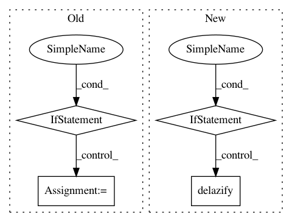

76c081b840cd71b20d8ac8692b312ebef95eae75,gpytorch/models/exact_prediction_strategies.py,DefaultPredictionStrategy,exact_predictive_mean,#DefaultPredictionStrategy#Any#Any#,272
Before Change
precomputed_cache = self.mean_cache
if self.train_train_covar.dim() == 3:
res = test_train_covar.matmul(
precomputed_cache.expand(*test_train_covar.shape[:-2], test_train_covar.shape[-1]).unsqueeze(-1)
).squeeze(-1)
else:
if self.non_batch_train and precomputed_cache.dim() == 2:
precomputed_cache = precomputed_cache[0]
res = test_train_covar.matmul(precomputed_cache)
res = res + test_mean
return res
After Change
:obj:`torch.tensor`: The predictive posterior mean of the test points
// For efficiency - we can use addmv in the 2d case
if test_train_covar.dim() == 2:
res = torch.addmv(test_mean, delazify(test_train_covar), self.mean_cache)
// In other cases - we"ll use the standard infrastructure
else:
res = (test_train_covar @ self.mean_cache.unsqueeze(-1)).squeeze(-1)
res = res + test_mean
return res
def exact_predictive_covar(self, test_test_covar, test_train_covar):
In pattern: SUPERPATTERN
Frequency: 3
Non-data size: 4
Instances
Project Name: cornellius-gp/gpytorch
Commit Name: 76c081b840cd71b20d8ac8692b312ebef95eae75
Time: 2019-04-11
Author: gpleiss@gmail.com
File Name: gpytorch/models/exact_prediction_strategies.py
Class Name: DefaultPredictionStrategy
Method Name: exact_predictive_mean
Project Name: cornellius-gp/gpytorch
Commit Name: 30ca6105f64f1cbbdb7f012bc848ed840e6f3682
Time: 2019-04-12
Author: gpleiss@gmail.com
File Name: gpytorch/models/exact_prediction_strategies.py
Class Name: DefaultPredictionStrategy
Method Name: exact_predictive_mean
Project Name: cornellius-gp/gpytorch
Commit Name: 025866dd2aac3257ebcb03dcc4e1b79a853b97d4
Time: 2019-07-21
Author: gpleiss@gmail.com
File Name: gpytorch/lazy/chol_lazy_tensor.py
Class Name: CholLazyTensor
Method Name: __init__